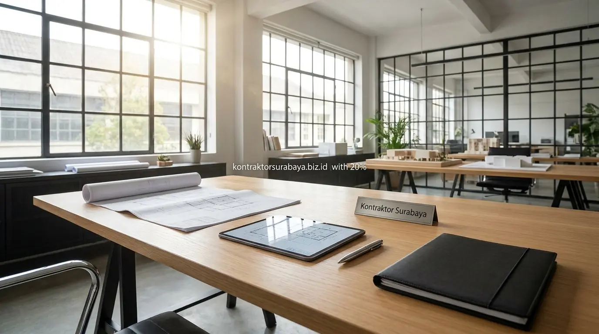
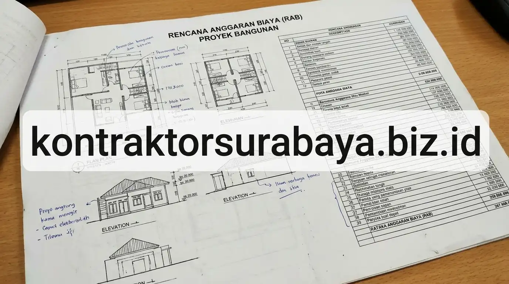

Banyak pemilik tanah di Surabaya yang ingin memulai proyek bangun rumah tinggal, ruko, maupun renovasi besar masih bingung membedakan antara Izin Mendirikan Bangunan (IMB) lama dengan Persetujuan Bangunan Gedung (PBG). Sejak berlakunya PP No. 16 Tahun 2021, istilah IMB telah resmi digantikan oleh PBG dengan sistem pengajuan terpusat melalui portal Sistem Informasi Manajemen Bangunan Gedung (SIMBG).
Memahami regulasi, komponen dokumen teknis dari jasa arsitek Surabaya, serta rincian estimasi retribusi resmi dari layanan RAB & estimasi biaya sangat penting agar proyek Anda berjalan lancar tanpa risiko penyegelan oleh Satpol PP Kota Surabaya.
1. Fungsi PBG sebagai Syarat Wajib Sebelum Membangun
Persetujuan Bangunan Gedung atau PBG menjadi dokumen legal mutlak yang menyatakan bahwa rencana teknis bangunan telah memenuhi ketentuan tata ruang, keselamatan struktur, dan proteksi lingkungan yang berlaku di wilayah Surabaya.
Tanpa PBG yang sah, proses pembangunan fisik di lapangan berisiko disegel, didenda, atau dihentikan paksa. Selain itu, ketiadaan PBG akan menyulitkan pengurusan Sertifikat Laik Fungsi (SLF) di masa depan, menghambat proses balik nama sertifikat, hingga menyulitkan pengajuan agunan kredit perbankan untuk bangunan komersial maupun hunian pribadi.
2. Faktor yang Menentukan Besaran Biaya Retribusi PBG
Besaran retribusi resmi PBG diatur dalam Peraturan Daerah (Perda) Kota Surabaya tentang Pajak dan Retribusi Daerah. Nilainya dihitung secara otomatis oleh sistem SIMBG berdasarkan formula baku:
Rumus Retribusi PBG = Luas Total Bangunan (m²) × Indeks Terintegrasi × Standar Harga Satuan Tertinggi (SHST)
Indeks terintegrasi mencakup fungsi bangunan (0.5–1.2), klasifikasi kompleksitas, jumlah lantai, dan zona wilayah.Empat faktor utama penentu besaran biaya retribusi tersebut adalah:
- Luas Lantai Bangunan (m²): Semakin luas total bangunan (lantai 1, lantai 2, dan dak atap), semakin besar dasar pengali retribusi.
- Fungsi Bangunan: Rumah tinggal sederhana memiliki indeks paling rendah (0,5), sedangkan ruko komersial, kantor, dan gudang industri dikenakan indeks yang lebih tinggi.
- Jumlah Lantai & Kompleksitas Struktur: Bangunan bertingkat tinggi atau bentang lebar memerlukan kajian teknis lebih mendalam sehingga indeks kompleksitasnya meningkat.
- Indeks Lokasi / Zonasi: Klasifikasi peruntukan lahan sesuai Rencana Detail Tata Ruang (RDTR) Surabaya (kawasan permukiman, perdagangan, atau industri).

3. Tahapan Pengurusan PBG dari Awal hingga Terbit
Pengurusan PBG di Surabaya saat ini dilakukan secara transparan melalui empat tahapan utama:
- Penyusunan Berkas & Gambar Teknis: Arsitek dan ahli struktur menyusun gambar kerja DED (arsitektur, denah struktur, detail pembesian, dan utilitas MEP) sesuai standar SNI.
- Pengunggahan Permohonan di SIMBG: Pemohon mendaftarkan akun di simbg.pu.go.id, mengunggah identitas tanah, KTP, dan paket berkas gambar PDF.
- Sidang Konsultasi Teknis Tim TPA/TPT: Dinas Cipta Karya / Tim Penilai Teknis memeriksa kesesuaian Garis Sempadan Bangunan (GSB), Koefisien Dasar Bangunan (KDB), dan kekuatan struktur. Jika ada catatan, pemohon diberi waktu melakukan revisi.
- Penerbitan SKRD & Pembayaran: Setelah dinyatakan lolos teknis, Dinas mengeluarkan Surat Ketetapan Retribusi Daerah (SKRD). Pemohon membayar retribusi ke kas daerah, dan dokumen PBG terbit secara digital dengan tanda tangan elektronik.
4. Dokumen yang Perlu Disiapkan Sebelum Mengajukan PBG
Kelengkapan dokumen teknis menjadi penentu utama agar proses evaluasi tidak tertunda berminggu-minggu:
| Kelompok Dokumen | Rincian Berkas yang Wajib Disiapkan | Instansi / Pihak Penyusun | Perkiraan Retribusi |
|---|---|---|---|
| Administrasi Lahan | Sertifikat Tanah (SHM/HGB), KTP pemohon, KRK (Keterangan Rencana Kota), PBB lunas terbaru | Pemilik / BPN / Bappeko | Biaya administrasi standar |
| Gambar Arsitektur | Site plan, denah ruangan, tampak 4 sisi, potongan melintang/membujur, spesifikasi material | Jasa Arsitek Berlisensi STRA | Rumah 100–200 m²: Rp 1,5 jt – Rp 3,5 jt |
| Struktur & Pondasi | Gambar pembesian beton, perhitungan beban struktur, denah pondasi, hasil sondir tanah (bila >2 lantai) | Insinyur Sipil (SKK Konstruksi) | Rumah Mewah >300 m²: Rp 4 jt – Rp 8 jt |
| Utilitas & MEP | Instalasi listrik, jalur air bersih & air kotor, septic tank biofil, sistem proteksi petir/kebakaran | Tenaga Ahli MEP / Kontraktor | Ruko / Gedung Usaha: Rp 6 jt – Rp 15 jt+ |
Rincian alokasi biaya pengurusan izin dan estimasi material pembangunan rumah dapat Anda hitung melalui panduan cara menghitung biaya bangun rumah per meter dari kami.
5. Berapa Lama Proses Pengurusan PBG Biasanya Berlangsung?
Berdasarkan standar operasional prosedur pemerintah kota, estimasi waktu verifikasi PBG memakan waktu 14 hingga 28 hari kerja sejak berkas dinyatakan lengkap (status lolos verifikasi administratif).
Faktor yang paling sering membuat waktu molor hingga berbulan-bulan adalah adanya perbaikan berkas gambar kerja yang berulang kali ditolak tim pemeriksa teknis karena melanggar sempadan jalan (GSB) atau perhitungan tulangan kolom yang dianggap rawan gempa. Memakai jasa arsitek yang paham regulasi tata kota Surabaya adalah kunci percepatan izin Anda.
6. Cara Memastikan Informasi Biaya PBG yang Akurat dan Resmi
Hindari calo perizinan liar yang kerap mematok harga borongan tinggi dengan iming-iming izin kilat tanpa sidang teknis. Nilai retribusi resmi PBG kini dapat dicek secara transparan melalui simulasi hitung retribusi di situs SIMBG resmi sebelum Anda membayar.
Pastikan pembayaran retribusi hanya ditransfer langsung ke rekening kas daerah Kota Surabaya melalui kode bayar e-Billing resmi Bank Jatim, bukan ke rekening perorangan. Biaya lain yang sah hanyalah honorarium jasa konsultan arsitektur dan insinyur struktur berlisensi yang menyusun dokumen DED Anda.
7. Kesalahan Umum yang Membuat Pengurusan PBG Molor
Agar anggaran tidak membengkak dan waktu pelaksanaan proyek kontraktor rumah tinggal Anda tepat waktu, hindari empat kesalahan berikut:
- Membangun Tanpa Menunggu PBG Terbit: Memulai pekerjaan galian pondasi sebelum SKRD dibayar memicu sanksi penghentian proyek oleh aparat.
- Mengabaikan Keterangan Rencana Kota (KRK): Mendesain rumah melebihi Garis Sempadan Jalan atau melanggar Koefisien Dasar Bangunan (KDB) sehingga gambar terpaksa dibongkar ulang dari awal.
- Gambar Kerja Tidak Bersertifikasi: Mengajukan gambar denah sederhana tanpa tanda tangan dan nomor Surat Tanda Registrasi Arsitek (STRA) atau Surat Keterangan Keahlian (SKK).
- Data Luas Tanah pada Sertifikat Tidak Sinkron: Terdapat sengketa batas tanah atau perbedaan luasan antara sertifikat dengan kondisi fisik eksisting di lapangan.
"Mengurus PBG bukan sekadar memenuhi syarat formalitas selembar kertas izin, melainkan jaminan bahwa rumah yang Anda tinggali dirancang aman dari risiko kegagalan struktur dan sah secara hukum di masa depan." — Erlang Sinatrya, Lead Project Engineer Kontraktor Surabaya
Kontraktor Surabaya menyediakan paket layanan bangun rumah terpadu (design & build), di mana tim kami mendampingi penyusunan seluruh gambar kerja teknis, perhitungan struktur aman gempa, hingga pengawalan pengajuan PBG di dinas terkait. Pelajari profil tim kami di halaman tentang kami, lihat contoh proyek terbangun di halaman galeri portofolio, atau cek keseluruhan divisi pada halaman layanan konstruksi kami.
